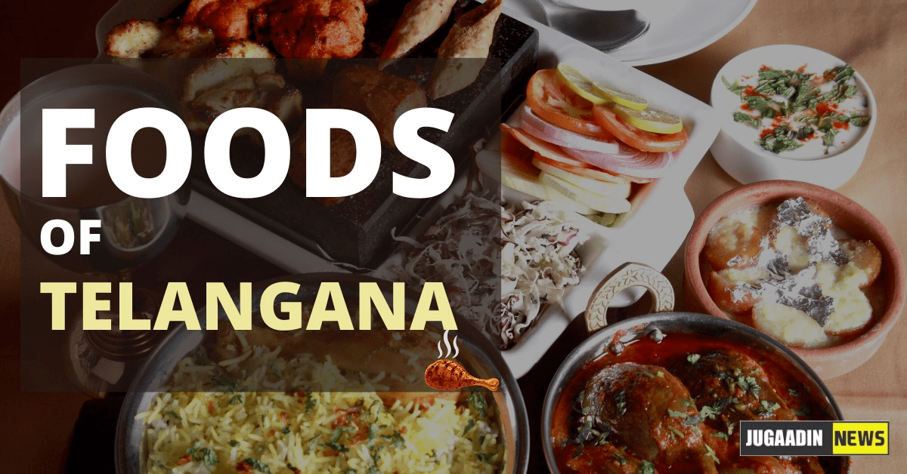

Cuisine

Vegetarian food
Pachi Pulusu
Various types of Lentils (Pappulu) and millets for sale in market
In Telangana regions Tamarind, red chilies (koraivikaram) and Asafoetida are predominantly used in Telangana cooking. Roselle is a major staple used extensively in curries and pickles.
- Sarva appa, a spicy pancake, is a staple breakfast, made with rice flour, chana dal, ginger, garlic, sesame seeds, curry leaves and green chiles.
- Puntikura Chana Dal: A vegetarian alternative to 'Gongura Ghosht', chana dal is cooked in spices and tempered with mustard and curry leaves.
- Bachali Kura: A tangy spinach curry cooked with tamarind paste.
- Pachi Pulusu: A spicy, raw rasam made with tamarind, chili and onions. Prepared mainly in Summer.
- Pappu chaaru
- Sorakaya koora
- Aloogadda kurma
- Dosakaya - Dosakaya Thokku
- Bagara annam
- Kattu Chaaru
- Chokdhra
Home Page